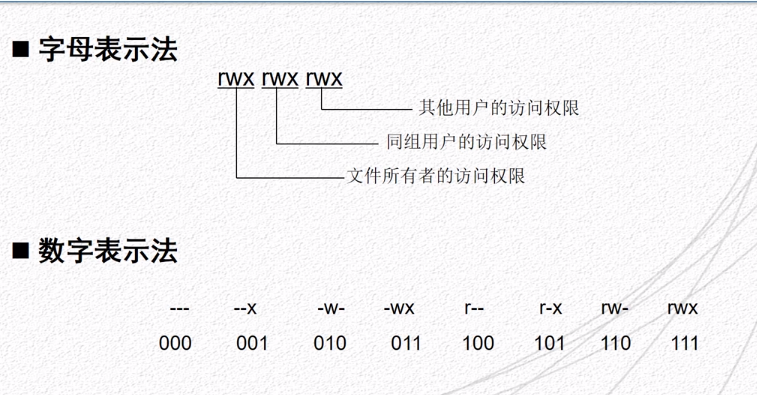

用户管理命令
命令名称：
useradd
命令英文原名：
user add
语法：
useradd [-degGsu] 用户名
功能描述：
新建用户账号（超级用户可用）
选项：
- -d: 指定用户登入是的主目录
- -e: 账号终止日期
- -g: 指定账户所属的用户组
- -G: 指定账户所属的附加组
- -s: 指定账户登录后所使用的shell
- -u: 指定用户ID号
范例：
$ useradd -g net04 zhangsan 新建一个用户zhangsan，用户组为net04
命令名称：
passwd
命令英文原名：
password
语法：
passwd [-dlus] 用户
功能描述：
设置或修改用户的口令以及口令的属性
选项：
- -d: (delete)删除用户的口令
- -l: (lock)暂时锁定指定的用户账号
- -u: (unlock)解除指定用户账号的锁定
- -s: (status)显示指定用户账号的状态
范例：
- $ passwd zhangsan 设置与修改属性
- $ passwd -d zhnagsan 删除口令
- $ passwd -l zhangsan 锁定用户账号
- $ passwd -u zhangsan 解锁用户账号
命令名称：
usermod
命令英文原名：
user modify
语法：
usermod [-degGsul] 用户名
功能描述：
修改用户的属性（超级用户可用）
选项：
- -d: (directory)指定用户登入是的主目录
- -e: (end)账号终止日期
- -g: (group)指定账户所属的用户组
- -G: 指定账户所属的附加组
- -s: (shell)指定账户登录后所使用的shell
- -u: (user)指定用户ID号
- -l: 新用户名（用于修改用户名）
范例：
$ usermod -l zhangs zhangsan 将zhangsan改为zhangs
命令名称：
userdel
命令英文原名：
user delete
语法：
userdel [-rf] 用户名
功能描述：
删除指定的用户账号
如果删除用户属于私人组群，而该组群没有其他用户，组群也一并删除
正在使用系统的用户不能删除
选项：
- -r: 不仅删除此用户账号，而且删除用户主目录及本地邮件存储的目录或文件
- -f: 删除用户登入目录以及目录中所有的文件
命令名称：
su
命令英文原名：
switch user
语法：
su 用户名
功能描述：
切换用户身份
超级用户可以切换为任何普通用户，而不需要输入口令；普通用户转换为其他用户时需要输入被切换用户的口令
使用exit可以返回到本来的用户身份
命令名称：
id
命令英文原名：
id
语法：
id 用户名
功能描述：
查看用户的UID、GID和用户所属用户组的信息，如果不指定用户，则显示当前用户的相关信息
命令名称：
whoami
命令英文原名：
who am I
语法：
whoami
功能描述：
查看当前用户名
命令名称：
w
语法：
w
功能描述：
查看当前登录系统用户和详细信息
用户组管理命令
命令名称：
groupadd
命令英文原名：
group add
语法：
groupadd [-go] 用户组名
功能描述：
新建组群（超级用户可用）
选项：
- -g: 指定用户组ID
- -o: 允许组ID号不唯一
命令名称：
groupmod
命令英文原名：
group modify
语法：
groupmod [-gno] 用户组名
功能描述：
修改指定用户组的属性（超级用户可用）
选项：
- -g: 指定新的用户组ID
- -n: 指定新的用户组名字
- -o: 允许组ID号不唯一
命令名称：
groupdel
命令英文原名：
group delete
语法：
groupdel 用户组名
功能描述：
删除指定的用户组（超级用户可用）
在删除指定用户组之前必须保证该用户组不是任何用户的主要组群，否则要线删除以此用户组为主要群组的用户才可以删除该用户组
文件权限
写入权限：
- 对文件而言是修改文件内容的权限
- 对目录而言是删除、添加和重命名目录内文件的权限
执行权限：
- 对可执行文件而言是允许执行的权限
- 对目录而言是进入目录的权限
基于用户的文件管理权限
文件用户分类
- 文件所有者：建立文件和目录的用户
- 文件所有者所在组用户：文件所有者所属用户组中的其他用户
- 其他用户：既不是文件所有者，又不在文件所有者所在组的其他所有用户
- 超级用户：负责整个系统的管理和维修，拥有系统中所有文件的全部访问权限

文件权限管理命令
命令名称：
chmod
命令英文原名：
change mode
语法：
chmod [模式] [文件]
参数：
- 对象：u 文件所有者，g 同组用户，o 其他用户
- 操作符：+ 增加，- 删除，= 赋予
- 权限：r 读，w 写，x 执行，s 设置用户ID
功能描述：
修改文件的访问权限
范例：
- $ chmod g-w file 取消同组用户对file文件的写入权限
- $ chmod 775 pict 将pict目录的访问权限设置为775
- $ chmod u+s file 设置file文件的设置用户ID位
命令名称：
chown
命令英文原名：
change owner
语法：
chown [选项] 所有者/组 文件
参数：
- -c: 显示更改的部分的信息
- -f: 忽略错误信息
- -h: 修复符号链接
- -R: 处理指定目录以及其子目录下的所有文件
- -v: 显示详细的处理信息
- -deference: 作用与符号链接的指向，而不是链接文件本身
- 用户是用户名或者用户ID，用户组可以是组名或者组ID
- 文件是以空格分开的要改变权限的文件列表，支持通配符
功能描述：
将指定文件的拥有着改为指定的用户或用户组
范例：
$ chown hellen ex1 将ex1的所有者由root改为hellen
命令名称：
chgrp
命令英文原名：
change group
语法：
chgrp [选项] 组 文件
选项：
- -c: 当发生改变时输出调式信息
- -f: 不显示错误信息
- -R: 处理指定目录以及其子目录下的所有文件
- -v: 运行时显示详细的处理信息
- -dereference: 作用于符号链接的指向，而不是符号链接本身
- --no-dereference: 作用于符号链接本身
- 用户组可以时组名或者组ID
功能描述：
改变文件的所属用户组
范例：
$ chgrp staff ex1 将ex1文件所属的用户组由root改为staff